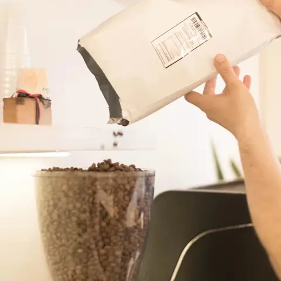
PUERTO BLEST · DE ORIGEN
Café en grano o molido
El origen de la semana, para tu método.
A confirmar
BS. · COGHLAN · AS.
Lulo es un fruto que crece en altura, igual que el café. En una cuadra tranquila de Coghlan lo servimos en cerámica, con pastelería casera.
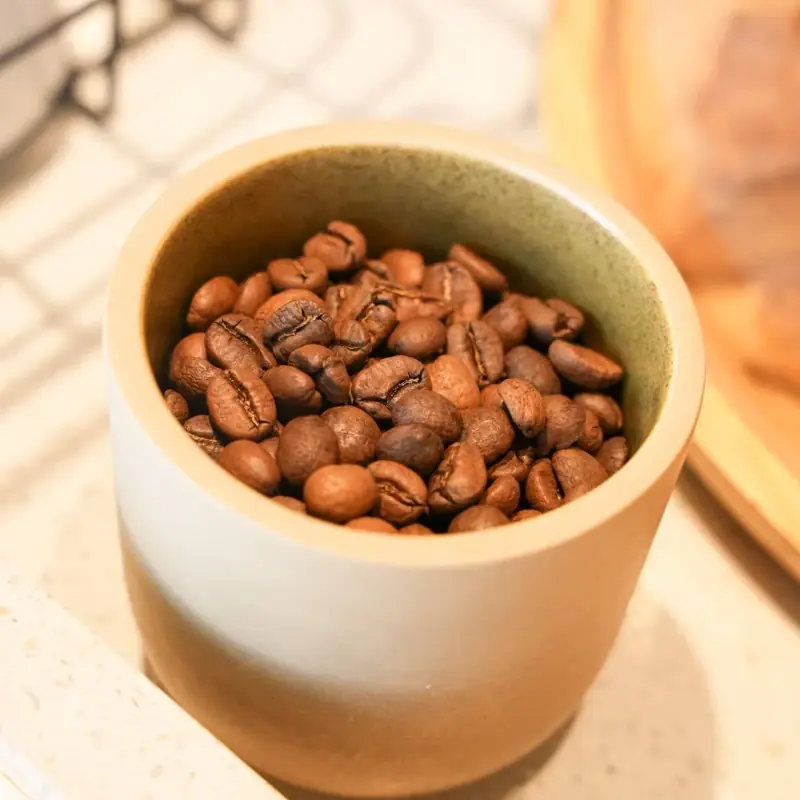
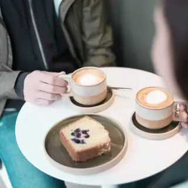
LA CARTA
Tocá cualquier café y mirá cómo se arma, con los ml reales. Sumá lo que quieras y pasá a retirar sin esperar: el pedido le llega a LULO a su panel.
Esta misma carta vive en su propia página, la del QR de las mesas: LULO cambia un precio desde su panel y se actualiza sola.
NUESTRO CAFÉ · PUERTO BLEST
Servimos café de especialidad de Puerto Blest, tostadores de café. Elegí un origen y recorré sus notas: de dónde viene, a qué altura crece y cómo lo puntuaron en la cata.
Tocá o pasá el mouse por la rueda para ver cada nota.
Hoy en la máquina
PERÚ · AMAZONAS
PARA LLEVAR

PUERTO BLEST · DE ORIGEN
El origen de la semana, para tu método.
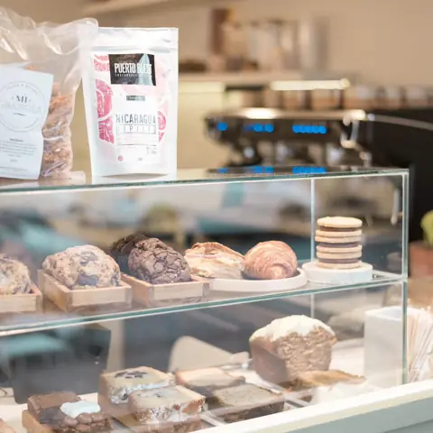
HECHA ACÁ
La de la vitrina, para el desayuno de toda la semana.
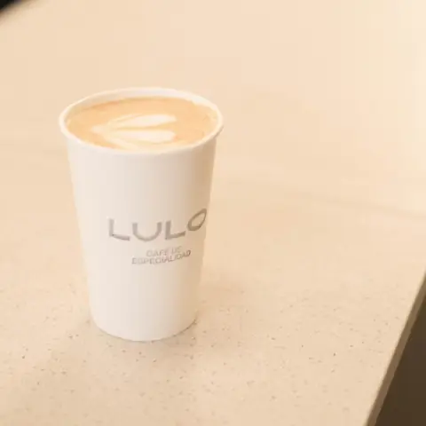
A LAS CORRIDAS
Armás el pedido desde la carta, elegís la hora y lo retirás en la vereda sin esperar.
LA VEREDA · DESDE 2023
LULO nació del sueño de Fede: un café de especialidad en Coghlan, con una vereda simple y un ambiente relajado. Hoy es un lugar de pertenencia para muchos y, como dicen algunos, un segundo hogar.
Fedeel artista de tu café favorito
Leala mejor atención y los cafecitos de la tarde
“Nos vemos ahí. Donde siempre.”— Fede
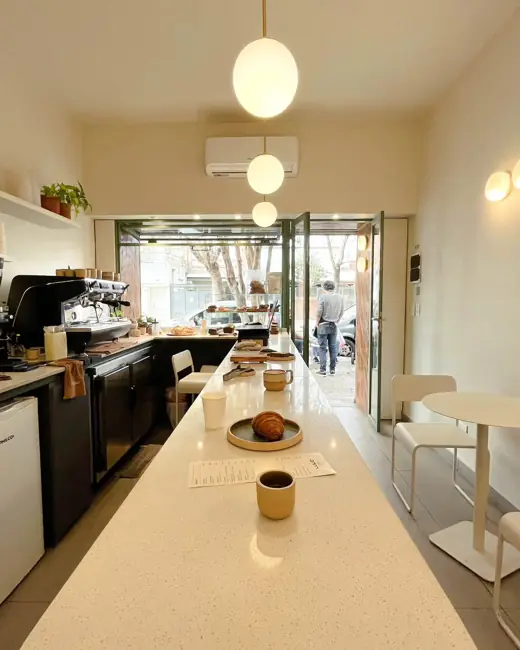
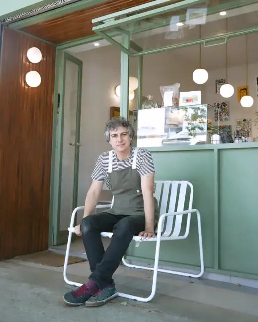
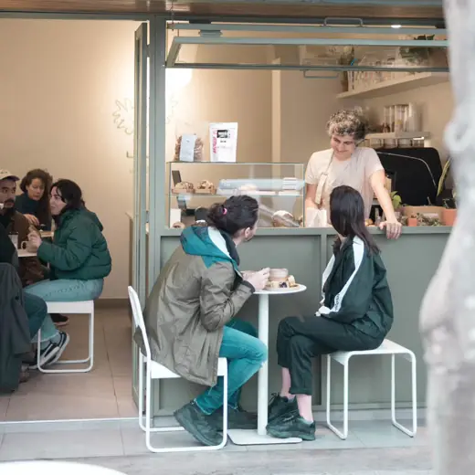
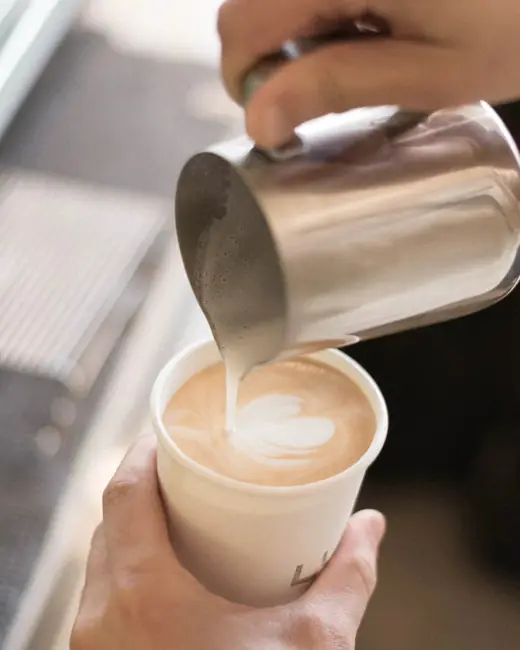
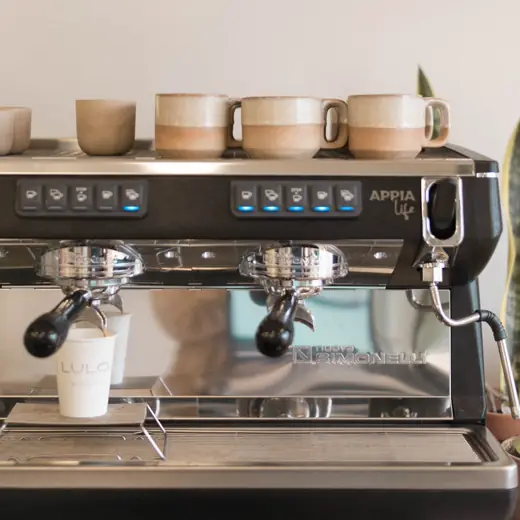
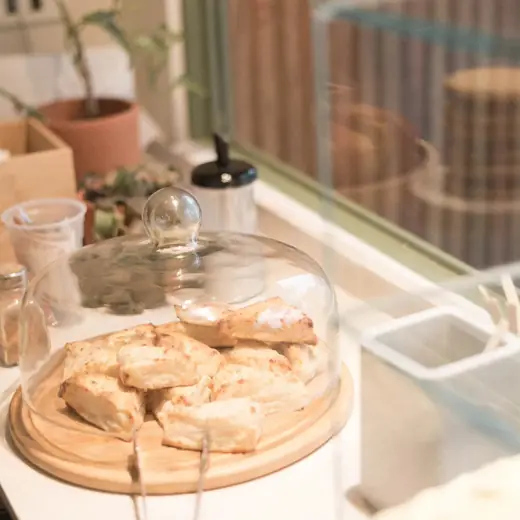
COMUNIDAD
Cada tanto abrimos la casa para algo más. Seguinos en Instagram para enterarte de la próxima fecha.
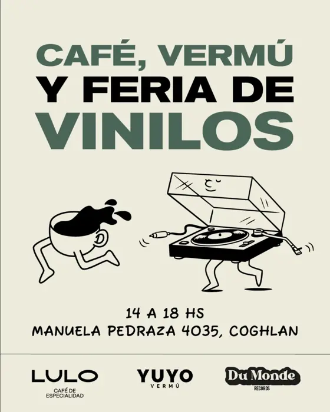
Con Du Monde Records y el vermú de Yuyo, que solo encontrás en Coghlan.
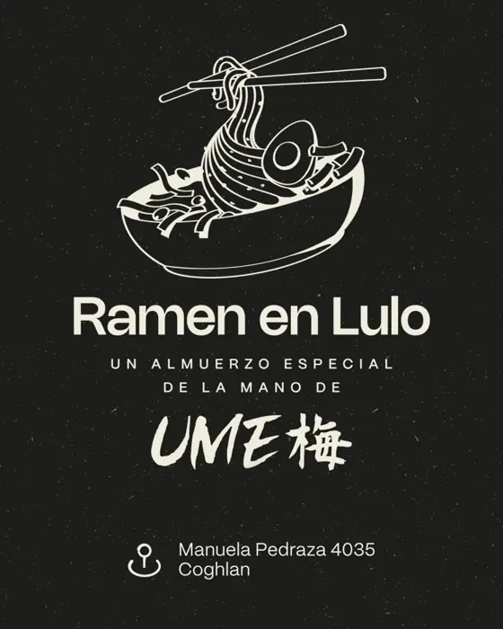
Un almuerzo especial de la mano de Ume Ramen, con vinitos y DJ.
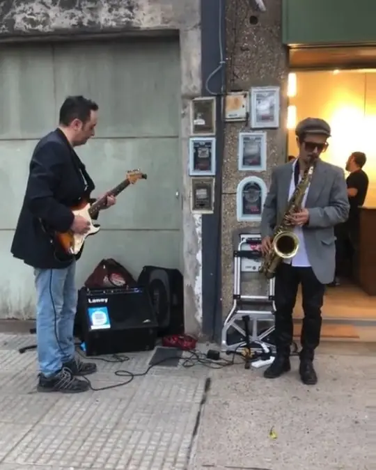
Guitarra y saxo en la vereda, una tarde cualquiera.
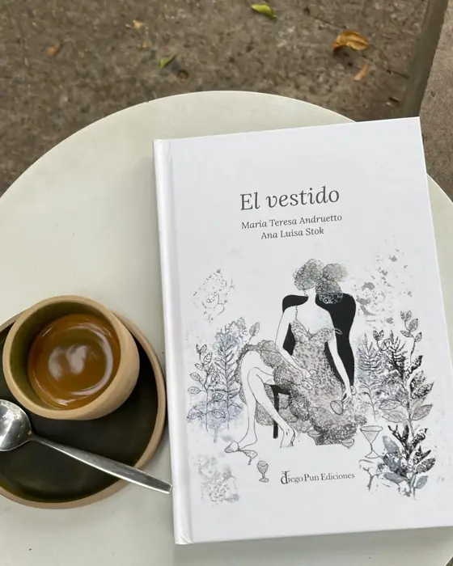
Artistas del barrio, como Ana Stok, cuelgan sus obras y libros en el café.
LO QUE DICEN EN GOOGLE
5/5
“El café es, sin exagerar, de los mejores que probé: espumoso, bien caliente y con un sabor espectacular. Y un capítulo aparte para Fede, el dueño, que te hace sentir como en casa desde que entrás.”
Pilar D.
5/5
“Excelente café! Muy bien preparado, con buena temperatura y muy bien equilibrado. Servido en una vajilla sutil, rústica, que invita a disfrutar. Una linda joya en el barrio.”
Juan P.
5/5
“Probé el forforito con jamón y queso, el croissant y el scon de queso y todo fue espectacular. La cuadra es muy tranquila y el lugar te invita a disfrutar una hermosa tarde.”
Sol G.
5/5
“Los chipá son excelentes y los scons de queso también muy ricos. Probamos las cookies y el budín de carrot, súper esponjoso. Los chicos siempre buena onda.”
Clarisa R.
5/5
“Hermoso cafecito, un lugar que abraza e invita a volver, porque no es solo el riquísimo café: es la energía, sobre todo, de su dueño Fede.”
Paula H.
5/5
“Exquisito café peruano en el caso del que tomé hoy, y muy bien preparado. Lugar tranquilo para ir a relajar, trabajar o reunirse y pasar un lindo momento.”
Angie C.
CÓMO LLEGAR
Martes a sábados 9:00 a 19:00 hs